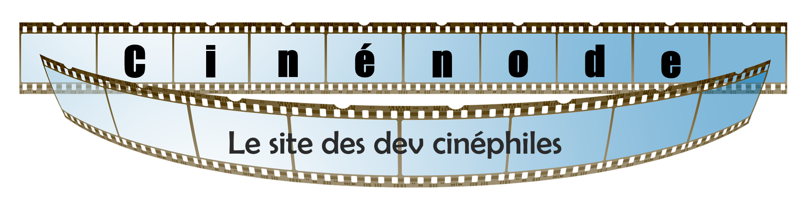

Cinénode vous permet de pouvoir chercher les informations sur des films en se basant sur la base de donnée : The Movie Database via le menu Recherche MovieDB mais il vous permet aussi de pouvoir ajouter à votre compte personnel (sécurisé par token avec Jwt entre autre), les films que vous aimez afin de pouvoir avoir une liste détaillée des informations les concernant. Cette liste se trouve sur le menu Mes Films. Dans ce menu, vous pourrez ajouter, modifier et supprimer des films qui seront stockés sur la base de donnée MongoDB afin de pouvoir y accéder très facilement.
Ce site est développé en Node.JS